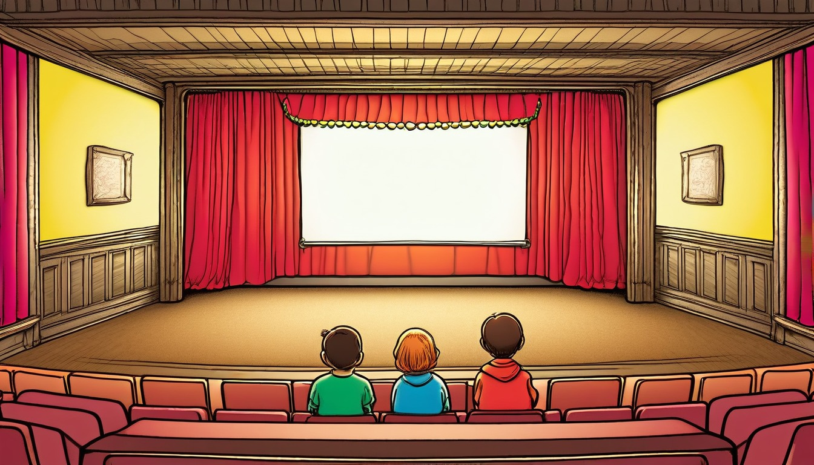

Sixteen archive-drawer cards help writers connect a loose thread, a last choice, a changed feeling, a closing image, a leftover question, and a next-story seed.
Audience: Families, homeschool groups, tutors, and adult-led writing tables for writers ages 7-11.
Format: 16 printable archive drawer story resolution cards plus adult guide tools, resolution routines, take-home resolution slips, and optional adult prompts
Family-safe printable writing pages for adult-led, offline resolution practice.
Adult-led setup: place the archive drawer, blank slips, pencils, and one resolution card on the table before the paper-only work begins: ____________________.
Adult-led framing: keep every loose thread, last choice, changed feeling, closing image, leftover question, next-story seed, and archive drawer label fictional: ____________________.
Adult-led order: move from loose thread to last choice, changed feeling, closing image, leftover question, next-story seed, and archive drawer label: ____________________.
Adult-led support: let the writer write or dictate short paper lines while the adult keeps the archive drawer sorted: ____________________.
Adult-led safety: use pretend names, broad made-up places, and invented actions instead of personal facts or exact identifiers: ____________________.
Adult-led finish: reread the paper-only resolution plan, choose the next-story seed, and write the archive drawer label: ____________________.
Use one story resolution card at a time. Keep every change broad, invented, paper-only, and guided by an adult.
World menu
Sixteen resolution card worlds
Pick a world image, then connect what came before, what changed, and what follows next.
Ages 7-8
Teacup Town Weather Window
Ages 7-8
Mitten Market Lost Ticket
Ages 7-9
Button Bakery Map Mix-Up
Ages 7-9
Paperclip Plaza Parcel Day
Ages 7-9
Sticker Station Mail Cart
Ages 8-10
Greenhouse Gear Garden
Ages 8-10
Moss Message Observatory
Ages 8-10
Rain Gauge Railway
Ages 8-10
Seed Library Map Room
Ages 8-10
Solar Oven Picnic Station
Ages 8-10
Tidepool Timekeepers Lab
Ages 10-11
Almost Invention Workshop
Ages 10-11
Appendix Archive Lab
Ages 10-11
Clue Label Tower Museum
Ages 8-10
Compost Clock Workshop

Ages 10-11
Index Card Theater Club
Resolution routines
Choose the story resolution routine
short paper setup: ____________________.
Loose Thread Sort: ____________________.
Archive drawer, loose thread slip, blank page, and pencil: ____________________.
The adult opens the archive drawer and points to the loose thread blank: ____________________.
The writer names one fictional loose thread still waiting on paper: ____________________.
The adult asks which earlier paper note the loose thread connects to: ____________________.
The writer writes the loose thread on the slip and places it at the front: ____________________.
This resolution plan starts with the loose thread: ____________________.
choice connection pass: ____________________.
Last Choice Link: ____________________.
Archive drawer, loose thread slip, last choice slip, and pencil: ____________________.
The adult rereads the loose thread and points to the last choice blank: ____________________.
The writer names the fictional last choice that answers part of the loose thread: ____________________.
The adult asks how the last choice links back to the paper plan: ____________________.
The writer writes the last choice link and slides it behind the loose thread: ____________________.
The last choice links the loose thread to this answer: ____________________.
feeling change pass: ____________________.
Changed Feeling Check: ____________________.
Archive drawer, last choice slip, changed feeling slip, and pencil: ____________________.
The adult places the last choice slip beside the changed feeling blank: ____________________.
The writer names one changed feeling for the fictional character after the last choice: ____________________.
The adult asks what paper line makes that changed feeling clear: ____________________.
The writer writes the changed feeling check and keeps it with the last choice: ____________________.
The changed feeling after the last choice is: ____________________.
The adult sets the closing image beside the leftover question blank: ____________________.
The writer names one gentle leftover question that can remain for a next-story seed: ____________________.
The adult asks which part belongs in this resolution and which part waits: ____________________.
The writer writes the leftover question note and marks it for the next-story seed: ____________________.
The leftover question waiting for a next-story seed is: ____________________.
archive drawer wrap: ____________________.
Archive Drawer Label Close: ____________________.
Archive drawer, finished slips, label strip, and pencil: ____________________.
The adult rereads the loose thread, last choice, changed feeling, closing image, and leftover question: ____________________.
The writer chooses one next-story seed that grows from the leftover question: ____________________.
The adult asks what archive drawer label will help sort this paper-only resolution: ____________________.
The writer writes the next-story seed and archive drawer label, then the adult files the slips: ____________________.
The archive drawer label closes the resolution as: ____________________.
Take-home resolution slips
Try one resolution later
Take-home resolution slip
Resolution slip 1
Adult: set out one paper slip and ask for a fictional loose thread: ____________________.
Take-home resolution slip
Resolution slip 2
Writer: the fictional loose thread waiting in the archive drawer is: ____________________.
Take-home resolution slip
Resolution slip 3
Adult: ask which last choice links back to that loose thread: ____________________.
Take-home resolution slip
Resolution slip 4
Writer: the last choice link is: ____________________.
Take-home resolution slip
Resolution slip 5
Adult: ask what changed feeling follows the last choice: ____________________.
Take-home resolution slip
Resolution slip 6
Writer: the changed feeling is: ____________________.
Take-home resolution slip
Resolution slip 7
Adult: ask for one closing image that fits the paper-only resolution: ____________________.
Take-home resolution slip
Resolution slip 8
Writer: the closing image is: ____________________.
Take-home resolution slip
Resolution slip 9
Adult: ask which leftover question can become a next-story seed: ____________________.
Take-home resolution slip
Resolution slip 10
Writer: the next-story seed and archive drawer label are: ____________________.
Optional adult prompts
Optional adult-led paper prompt: the loose thread still waiting is ____________________.
Optional adult-led paper prompt: the last choice links back by ____________________.
Optional adult-led paper prompt: the changed feeling after the last choice is ____________________.
Optional adult-led paper prompt: the closing image shows ____________________.
Optional adult-led paper prompt: the leftover question can ask ____________________.
Optional adult-led paper prompt: the next-story seed could be ____________________.
Optional adult-led paper prompt: the archive drawer label can say ____________________.
Optional adult-led paper prompt: the paper-only resolution closes when ____________________.
Resolution Card 1 | Ages 7-8 | plan a fictional paper-only resolution by naming one loose thread, last choice, changed feeling, closing image, leftover question, next-story seed, and archive drawer label: ____________________.
Teacup Town Weather Window Story Resolution Card
Teacup Town Weather Window
Adult setup: Adult: set out a blank page, pencil, and pretend archive drawer card before the weather-window resolution talk: ____________________.
Writer: keep the teacup window, tiny weather sign, and helper invented while the resolution stays on paper: ____________________.
Loose thread
Adult-led fictional offline paper-only loose thread: write the small weather-window clue that still needs a calm answer: ____________________.
Last choice
Adult-led fictional offline paper-only last choice: write the helper's final pretend paper choice at the window: ____________________.
Changed feeling
Adult-led fictional offline paper-only changed feeling: write how the helper feels after the weather sign makes sense: ____________________.
Closing image
Adult-led fictional offline paper-only closing image: write one quiet Teacup Town picture to leave on the page: ____________________.
Leftover question
Adult-led fictional offline paper-only leftover question: write one small question the archive drawer can hold for later: ____________________.
Next-story seed
Adult-led fictional offline paper-only next-story seed: write one new pretend weather-window idea for another page: ____________________.
Archive drawer label
Adult-led fictional offline paper-only archive drawer label: write a broad label for this Teacup Town resolution: ____________________.
Quiet option: adult and writer fill only the loose thread, closing image, and archive drawer label on paper: ____________________. Take-home line: save this pretend weather-window resolution card for one later paper revisit: ____________________.
Resolution Card 2 | Ages 7-8 | plan a fictional paper-only resolution by matching a lost-ticket loose thread to a last choice, changed feeling, closing image, leftover question, next-story seed, and archive drawer label: ____________________.
Mitten Market Lost Ticket Story Resolution Card
Mitten Market Lost Ticket
Adult setup: Adult: place a blank page, pencil, and pretend archive drawer card beside the mitten-ticket page: ____________________.
Writer: keep the market stalls, mitten tags, and ticket helper made up while the resolution stays on paper: ____________________.
Loose thread
Adult-led fictional offline paper-only loose thread: write what the pretend lost ticket still needs to explain: ____________________.
Last choice
Adult-led fictional offline paper-only last choice: write the helper's final ticket-sorting choice on the page: ____________________.
Changed feeling
Adult-led fictional offline paper-only changed feeling: write how the helper feels when the ticket mix-up settles: ____________________.
Closing image
Adult-led fictional offline paper-only closing image: write one quiet mitten-market picture that closes the page: ____________________.
Leftover question
Adult-led fictional offline paper-only leftover question: write one gentle ticket question to store for another paper day: ____________________.
Next-story seed
Adult-led fictional offline paper-only next-story seed: write one new pretend ticket or mitten tag idea: ____________________.
Archive drawer label
Adult-led fictional offline paper-only archive drawer label: write a broad label for this Mitten Market resolution: ____________________.
Quiet option: adult and writer fill only the last choice and changed feeling before adding the rest: ____________________. Take-home line: keep this pretend ticket resolution card with a blank page for later paper writing: ____________________.
Resolution Card 3 | Ages 7-9 | plan a fictional paper-only resolution by connecting a button-map loose thread to a last choice, changed feeling, closing image, leftover question, next-story seed, and archive drawer label: ____________________.
Button Bakery Map Mix-Up Story Resolution Card
Button Bakery Map Mix-Up
Adult setup: Adult: set out a blank page, pencil, and pretend archive drawer card beside the button-map page: ____________________.
Writer: treat Button Bakery as a make-believe paper place, using button marks and map notes only: ____________________.
Loose thread
Adult-led fictional offline paper-only loose thread: write which button-map clue still needs a tidy answer: ____________________.
Last choice
Adult-led fictional offline paper-only last choice: write the helper's final button-map choice for the resolution: ____________________.
Changed feeling
Adult-led fictional offline paper-only changed feeling: write how the helper feels once the map mix-up is sorted: ____________________.
Closing image
Adult-led fictional offline paper-only closing image: write one quiet button-map picture that can close the page: ____________________.
Leftover question
Adult-led fictional offline paper-only leftover question: write one small map question to place in the archive drawer: ____________________.
Next-story seed
Adult-led fictional offline paper-only next-story seed: write one new pretend button-map idea for another page: ____________________.
Archive drawer label
Adult-led fictional offline paper-only archive drawer label: write a broad label for this Button Bakery resolution: ____________________.
Quiet option: adult and writer fill only the loose thread, last choice, and drawer label on paper: ____________________. Take-home line: save this pretend button-map resolution card for a later paper revisit: ____________________.
Resolution Card 4 | Ages 7-9 | plan a fictional paper-only resolution by closing a parcel-day loose thread with a last choice, changed feeling, closing image, leftover question, next-story seed, and archive drawer label: ____________________.
Paperclip Plaza Parcel Day Story Resolution Card
Paperclip Plaza Parcel Day
Adult setup: Adult: place a blank page, pencil, and pretend archive drawer card near the parcel-day notes: ____________________.
Writer: invent the plaza, paperclip marks, parcel slips, and helper while every resolution step stays on paper: ____________________.
Loose thread
Adult-led fictional offline paper-only loose thread: write which pretend parcel slip still needs a calm answer: ____________________.
Last choice
Adult-led fictional offline paper-only last choice: write the helper's final paperclip or parcel choice: ____________________.
Changed feeling
Adult-led fictional offline paper-only changed feeling: write how the helper feels after the parcel day settles: ____________________.
Closing image
Adult-led fictional offline paper-only closing image: write one quiet plaza picture that closes the story page: ____________________.
Leftover question
Adult-led fictional offline paper-only leftover question: write one small parcel question the archive drawer can keep: ____________________.
Next-story seed
Adult-led fictional offline paper-only next-story seed: write one new pretend paperclip-plaza idea for later: ____________________.
Archive drawer label
Adult-led fictional offline paper-only archive drawer label: write a broad label for this Paperclip Plaza resolution: ____________________.
Quiet option: adult and writer fill the closing image first, then choose the drawer label: ____________________. Take-home line: tuck this pretend parcel-day resolution card with a blank page for later paper writing: ____________________.
Resolution Card 5 | Ages 7-9 | plan a fictional paper-only resolution by matching one mail-cart note to a sticker mood, choosing the last delivery choice, changed feeling, closing cart image, leftover note question, next-story seed, and archive drawer label: ____________________.
Sticker Station Mail Cart Story Resolution Card
Sticker Station Mail Cart
Adult setup: Adult: place a blank page, pencil, and pretend archive drawer card beside an invented sticker-cart note stack: ____________________.
Writer: keep the sticker shop, mail cart, note stack, and helper made up while the resolution stays on paper: ____________________.
Loose thread
Adult-led fictional offline paper-only loose thread: write which pretend note still needs the right sticker mood before the cart rests: ____________________.
Last choice
Adult-led fictional offline paper-only last choice: choose the final sticker, fold, or cart pocket for the pretend note: ____________________.
Changed feeling
Adult-led fictional offline paper-only changed feeling: write how the helper feels when the note finally matches its mood: ____________________.
Closing image
Adult-led fictional offline paper-only closing image: write one quiet picture of the mail cart after the sticker note is tucked away: ____________________.
Leftover question
Adult-led fictional offline paper-only leftover question: name one pretend note question that can wait in the archive drawer: ____________________.
Next-story seed
Adult-led fictional offline paper-only next-story seed: invent the next harmless note that rolls onto the sticker cart: ____________________.
Archive drawer label
Adult-led fictional offline paper-only archive drawer label: write the broad drawer label for this Sticker Station resolution: ____________________.
Quiet option: adult and writer fill only the note, sticker mood, and drawer label first: ____________________. Take-home line: save this pretend mail-cart card and add one new sticker note later: ____________________.
Resolution Card 6 | Ages 8-10 | plan a fictional paper-only resolution by fitting a gear-garden loose thread with a last choice, changed feeling, closing image, leftover question, next-story seed, and archive drawer label: ____________________.
Greenhouse Gear Garden Story Resolution Card
Greenhouse Gear Garden
Adult setup: Adult: set out a blank page, pencil, and pretend archive drawer card beside the gear-garden story notes: ____________________.
Writer: invent the greenhouse gears, garden dials, and helper while every resolution choice stays on paper: ____________________.
Loose thread
Adult-led fictional offline paper-only loose thread: write which gear or garden-dial clue still needs a calm answer: ____________________.
Last choice
Adult-led fictional offline paper-only last choice: write the helper's final pretend gear-garden choice: ____________________.
Changed feeling
Adult-led fictional offline paper-only changed feeling: write how the helper feels after the gears line up on paper: ____________________.
Closing image
Adult-led fictional offline paper-only closing image: write one quiet greenhouse picture that closes the page: ____________________.
Leftover question
Adult-led fictional offline paper-only leftover question: write one small gear-garden question to store for later: ____________________.
Next-story seed
Adult-led fictional offline paper-only next-story seed: write one new pretend greenhouse gear idea for another page: ____________________.
Archive drawer label
Adult-led fictional offline paper-only archive drawer label: write a broad label for this Greenhouse Gear Garden resolution: ____________________.
Quiet option: adult and writer fill only the changed feeling, closing image, and drawer label on paper: ____________________. Take-home line: save this pretend gear-garden resolution card with a blank page for later writing: ____________________.
Resolution Card 7 | Ages 8-10 | connect one fictional loose thread, last choice, changed feeling, closing image, leftover question, next-story seed, and archive drawer label: ____________________.
Moss Message Observatory Story Resolution Card
Moss Message Observatory
Adult setup: Adult-led fictional offline paper-only setup: set out a blank observatory page, pencil, and archive drawer label slip before the resolution plan begins: ____________________.
Adult-led fictional offline paper-only direction: invent an observatory helper who reads pretend moss messages and closes the page calmly: ____________________.
Loose thread
Adult-led fictional offline paper-only loose thread: write the moss message question the helper still needs to settle on the page: ____________________.
Last choice
Adult-led fictional offline paper-only last choice: write the final paper choice the helper makes about the moss message: ____________________.
Changed feeling
Adult-led fictional offline paper-only changed feeling: write how the helper feels after understanding the message better: ____________________.
Closing image
Adult-led fictional offline paper-only closing image: draw or write one quiet observatory image that ends the page: ____________________.
Leftover question
Adult-led fictional offline paper-only leftover question: write one gentle question that can stay in the drawer for later: ____________________.
Next-story seed
Adult-led fictional offline paper-only next-story seed: write the tiny idea another moss message could start: ____________________.
Archive drawer label
Adult-led fictional offline paper-only archive drawer label: write the short pretend label for this moss message resolution: ____________________.
Adult-led fictional offline paper-only quiet option: adult reads the loose thread, and the writer fills only the changed feeling blank: ____________________. Adult-led fictional offline paper-only take-home line: place the observatory page in the archive drawer with the label ready for later paper use: ____________________.
Resolution Card 8 | Ages 8-10 | settle a fictional railway page by linking one loose thread, last choice, changed feeling, closing image, leftover question, next-story seed, and archive drawer label: ____________________.
Rain Gauge Railway Story Resolution Card
Rain Gauge Railway
Adult setup: Adult-led fictional offline paper-only setup: set out a blank rail note, pencil, and archive drawer label slip for the resolution plan: ____________________.
Adult-led fictional offline paper-only direction: invent a railway helper, a pretend gauge mark, and a calm paper ending: ____________________.
Loose thread
Adult-led fictional offline paper-only loose thread: write the gauge mark question that still needs a calm answer: ____________________.
Last choice
Adult-led fictional offline paper-only last choice: write the final choice the railway helper makes about the pretend gauge mark: ____________________.
Changed feeling
Adult-led fictional offline paper-only changed feeling: write how the helper feels after the rail note makes more sense: ____________________.
Closing image
Adult-led fictional offline paper-only closing image: draw or write one quiet rail card image that closes the page: ____________________.
Leftover question
Adult-led fictional offline paper-only leftover question: write one small question the railway helper can leave in the drawer: ____________________.
Next-story seed
Adult-led fictional offline paper-only next-story seed: write the tiny idea another pretend gauge mark could start: ____________________.
Archive drawer label
Adult-led fictional offline paper-only archive drawer label: write the short pretend label for this railway resolution: ____________________.
Adult-led fictional offline paper-only quiet option: adult points to the last choice line, and the writer fills only the closing image blank: ____________________. Adult-led fictional offline paper-only take-home line: place the rail note in the archive drawer with one leftover question saved for later paper use: ____________________.
Resolution Card 9 | Ages 8-10 | close a fictional map room page with one loose thread, last choice, changed feeling, closing image, leftover question, next-story seed, and archive drawer label: ____________________.
Seed Library Map Room Story Resolution Card
Seed Library Map Room
Adult setup: Adult-led fictional offline paper-only setup: set out a blank map room page, pencil, and archive drawer label slip before writing the resolution: ____________________.
Adult-led fictional offline paper-only direction: invent a map room helper who sorts pretend seed cards only on paper: ____________________.
Loose thread
Adult-led fictional offline paper-only loose thread: write the seed card mystery that still needs to be settled on the page: ____________________.
Last choice
Adult-led fictional offline paper-only last choice: write the final choice the map room helper makes about the pretend seed card: ____________________.
Changed feeling
Adult-led fictional offline paper-only changed feeling: write how the helper feels after the map room page feels settled: ____________________.
Closing image
Adult-led fictional offline paper-only closing image: draw or write one quiet image of the map room page resting in order: ____________________.
Leftover question
Adult-led fictional offline paper-only leftover question: write one small question the helper leaves for another paper page: ____________________.
Next-story seed
Adult-led fictional offline paper-only next-story seed: write the tiny idea another pretend seed card could start: ____________________.
Archive drawer label
Adult-led fictional offline paper-only archive drawer label: write the short pretend label for this map room resolution: ____________________.
Adult-led fictional offline paper-only quiet option: adult reads the changed feeling line, and the writer fills only the drawer label blank: ____________________. Adult-led fictional offline paper-only take-home line: place the map room page in the archive drawer with the next-story seed tucked beside it: ____________________.
Resolution Card 10 | Ages 8-10 | finish a fictional station page by connecting one loose thread, last choice, changed feeling, closing image, leftover question, next-story seed, and archive drawer label: ____________________.
Solar Oven Picnic Station Story Resolution Card
Solar Oven Picnic Station
Adult setup: Adult-led fictional offline paper-only setup: set out a blank station page, pencil, and archive drawer label slip for the resolution plan: ____________________.
Adult-led fictional offline paper-only direction: invent a station helper using pretend sun cards, shade marks, and folded paper tags: ____________________.
Loose thread
Adult-led fictional offline paper-only loose thread: write the station question that still needs a calm paper answer: ____________________.
Last choice
Adult-led fictional offline paper-only last choice: write the final choice the station helper makes about the pretend sun card: ____________________.
Changed feeling
Adult-led fictional offline paper-only changed feeling: write how the helper feels after the station plan settles on the page: ____________________.
Closing image
Adult-led fictional offline paper-only closing image: draw or write one quiet station image that closes the page: ____________________.
Leftover question
Adult-led fictional offline paper-only leftover question: write one small question the helper leaves in the drawer: ____________________.
Next-story seed
Adult-led fictional offline paper-only next-story seed: write the tiny idea another folded station tag could start: ____________________.
Archive drawer label
Adult-led fictional offline paper-only archive drawer label: write the short pretend label for this station resolution: ____________________.
Adult-led fictional offline paper-only quiet option: adult reads the loose thread, and the writer fills only the last choice blank: ____________________. Adult-led fictional offline paper-only take-home line: place the station page in the archive drawer with the closing image saved for later paper use: ____________________.
Resolution Card 11 | Ages 8-10 | resolve a fictional lab page through one loose thread, last choice, changed feeling, closing image, leftover question, next-story seed, and archive drawer label: ____________________.
Tidepool Timekeepers Lab Story Resolution Card
Tidepool Timekeepers Lab
Adult setup: Adult-led fictional offline paper-only setup: set out a blank timekeeper page, pencil, and archive drawer label slip before the resolution plan begins: ____________________.
Adult-led fictional offline paper-only direction: invent a tidepool timekeeper, a pretend chart, and a calm paper ending: ____________________.
Loose thread
Adult-led fictional offline paper-only loose thread: write the chart question the timekeeper still needs to settle on the page: ____________________.
Last choice
Adult-led fictional offline paper-only last choice: write the final choice the timekeeper makes about the pretend chart mark: ____________________.
Changed feeling
Adult-led fictional offline paper-only changed feeling: write how the timekeeper feels after the chart mark makes more sense: ____________________.
Closing image
Adult-led fictional offline paper-only closing image: draw or write one quiet lab image that ends the page: ____________________.
Leftover question
Adult-led fictional offline paper-only leftover question: write one small question the timekeeper leaves for a later paper page: ____________________.
Next-story seed
Adult-led fictional offline paper-only next-story seed: write the tiny idea another pretend chart mark could start: ____________________.
Archive drawer label
Adult-led fictional offline paper-only archive drawer label: write the short pretend label for this timekeeper resolution: ____________________.
Adult-led fictional offline paper-only quiet option: adult points to the closing image line, and the writer fills only the leftover question blank: ____________________. Adult-led fictional offline paper-only take-home line: place the timekeeper page in the archive drawer with the next-story seed ready for later paper use: ____________________.
Resolution Card 12 | Ages 10-11 | plan a fictional paper resolution by testing one almost-working invention part, choosing the final adjustment, showing the maker's changed feeling, closing on a bench image, parking one design question, and labeling the drawer: ____________________.
Almost Invention Workshop Story Resolution Card
Almost Invention Workshop
Adult setup: Adult-led fictional offline paper-only setup: place blank paper, pencil, and this archive drawer card beside a pretend almost-invention sketch sheet with one circled part: ____________________.
Adult-led fictional offline paper-only direction: write how the made-up maker resolves the almost-working part without making the invention complete in every way: ____________________.
Loose thread
Adult-led fictional offline paper-only loose thread: name the one wheel, hinge, flap, dial, or spring that still needs a pretend answer: ____________________.
Last choice
Adult-led fictional offline paper-only last choice: choose the final workshop adjustment the maker tries before setting down the pencil: ____________________.
Changed feeling
Adult-led fictional offline paper-only changed feeling: write how the maker feels when the invention is useful enough for today: ____________________.
Closing image
Adult-led fictional offline paper-only closing image: write the bench picture after the tool, sketch, and almost-invention rest together: ____________________.
Leftover question
Adult-led fictional offline paper-only leftover question: write the design question the maker tapes to the corner for a later paper pass: ____________________.
Next-story seed
Adult-led fictional offline paper-only next-story seed: invent the next harmless workshop test that could begin another page: ____________________.
Archive drawer label
Adult-led fictional offline paper-only archive drawer label: write the drawer label that says what the almost-invention finally solved: ____________________.
Adult-led fictional offline paper-only quiet option: point to the circled part and fill only the final adjustment blank first: ____________________. Adult-led fictional offline paper-only take-home line: save the workshop card and add one new pretend test sketch later: ____________________.
Resolution Card 13 | Ages 10-11 | plan a fictional paper resolution by moving one appendix note from confusing extra detail to useful archived clue, then naming the last filing choice, changed feeling, closing image, saved question, next page seed, and drawer label: ____________________.
Appendix Archive Lab Story Resolution Card
Appendix Archive Lab
Adult setup: Adult-led fictional offline paper-only setup: place blank paper, pencil, and this archive drawer card beside three pretend appendix slips, with one slip turned sideways: ____________________.
Adult-led fictional offline paper-only direction: decide which invented appendix slip belongs in the ending and which can wait in the drawer: ____________________.
Loose thread
Adult-led fictional offline paper-only loose thread: name the extra appendix slip that still makes the story page feel unfinished: ____________________.
Last choice
Adult-led fictional offline paper-only last choice: write the archivist helper's final filing move for that slip: ____________________.
Changed feeling
Adult-led fictional offline paper-only changed feeling: write how the helper feels when the extra note has a clear place: ____________________.
Closing image
Adult-led fictional offline paper-only closing image: write the lab picture after the sideways slip is clipped, tucked, or copied: ____________________.
Leftover question
Adult-led fictional offline paper-only leftover question: write the archive question that deserves its own future page instead of crowding this ending: ____________________.
Next-story seed
Adult-led fictional offline paper-only next-story seed: invent the next appendix slip that could open another quiet archive page: ____________________.
Archive drawer label
Adult-led fictional offline paper-only archive drawer label: write the label that tells why this appendix detail was saved: ____________________.
Adult-led fictional offline paper-only quiet option: sort the three slips silently, then write only the label and saved question: ____________________. Adult-led fictional offline paper-only take-home line: keep the archive card and add one new pretend appendix slip on paper later: ____________________.
Resolution Card 14 | Ages 10-11 | plan a fictional paper resolution by matching one tower clue to the right broad label, writing the final label choice, naming the changed feeling, closing with a museum image, saving one label question, and filing the drawer card: ____________________.
Clue Label Tower Museum Story Resolution Card
Clue Label Tower Museum
Adult setup: Adult-led fictional offline paper-only setup: place blank paper, pencil, and this archive drawer card beside a pretend tower-museum label stack with one blank tag: ____________________.
Adult-led fictional offline paper-only direction: resolve the made-up tower clue by giving it a useful label, not a real place or real object: ____________________.
Loose thread
Adult-led fictional offline paper-only loose thread: write which clue tag still has no clear label at the tower museum: ____________________.
Last choice
Adult-led fictional offline paper-only last choice: choose the final broad label the keeper attaches to the pretend clue: ____________________.
Changed feeling
Adult-led fictional offline paper-only changed feeling: write how the keeper feels when visitors in the made-up scene can understand the clue: ____________________.
Closing image
Adult-led fictional offline paper-only closing image: write the quiet tower shelf picture after the new label is in place: ____________________.
Leftover question
Adult-led fictional offline paper-only leftover question: write the label question that can wait in a lower drawer for another page: ____________________.
Next-story seed
Adult-led fictional offline paper-only next-story seed: invent the next harmless tower clue that appears beside a blank tag: ____________________.
Archive drawer label
Adult-led fictional offline paper-only archive drawer label: write the drawer label that groups this clue with the right pretend collection: ____________________.
Adult-led fictional offline paper-only quiet option: choose only the clue tag, final label, and shelf picture before writing more: ____________________. Adult-led fictional offline paper-only take-home line: save the tower label card and add one new pretend clue tag later: ____________________.
Resolution Card 15 | Ages 8-10 | plan a fictional paper resolution by settling one compost-clock layer, naming the final workshop choice, changed feeling, closing clock image, leftover layer question, next workshop seed, and archive drawer label: ____________________.
Compost Clock Workshop Story Resolution Card
Compost Clock Workshop
Adult setup: Adult-led fictional offline paper-only setup: place blank paper, pencil, and this archive drawer card beside a pretend compost-clock layer diagram: ____________________.
Adult-led fictional offline paper-only direction: resolve the made-up workshop clock by choosing which pretend layer moves into place and which waits: ____________________.
Loose thread
Adult-led fictional offline paper-only loose thread: write which pretend clock layer, dial mark, or workshop note is still unsettled: ____________________.
Last choice
Adult-led fictional offline paper-only last choice: choose the final crank, turn, or paper label that lets the compost clock rest: ____________________.
Changed feeling
Adult-led fictional offline paper-only changed feeling: write how the workshop helper feels when the clock layers line up enough for today: ____________________.
Closing image
Adult-led fictional offline paper-only closing image: write the quiet workshop-clock picture after the last dial mark is set: ____________________.
Leftover question
Adult-led fictional offline paper-only leftover question: write the layer question that can wait in the archive drawer for another page: ____________________.
Next-story seed
Adult-led fictional offline paper-only next-story seed: invent the next harmless compost-clock note that appears beside the dial: ____________________.
Archive drawer label
Adult-led fictional offline paper-only archive drawer label: write the broad label for this Compost Clock workshop resolution: ____________________.
Adult-led fictional offline paper-only quiet option: fill only the loose layer, final crank, and closing clock image first: ____________________. Adult-led fictional offline paper-only take-home line: keep the workshop-clock card and add one new pretend layer note later: ____________________.
Resolution Card 16 | Ages 10-11 | plan a fictional paper resolution by arranging one index-card scene cue, choosing the final stage-note card, showing the card keeper's changed feeling, closing on a quiet prop image, saving one cue question, and filing the archive drawer label: ____________________.
Index Card Theater Club Story Resolution Card
Index Card Theater Club
Adult setup: Adult-led fictional offline paper-only setup: place blank paper, pencil, and this archive drawer card beside three pretend index-card scene cues: ____________________.
Adult-led fictional offline paper-only direction: choose how the made-up theater card stack settles without using real names or real-life details: ____________________.
Loose thread
Adult-led fictional offline paper-only loose thread: name the index-card cue that still leaves the pretend scene unfinished: ____________________.
Last choice
Adult-led fictional offline paper-only last choice: choose the final stage-note card the keeper places on top of the stack: ____________________.
Changed feeling
Adult-led fictional offline paper-only changed feeling: write how the keeper feels when the cue cards finally sit in the right order: ____________________.
Closing image
Adult-led fictional offline paper-only closing image: write the quiet image of the top index card resting beside one pretend prop: ____________________.
Leftover question
Adult-led fictional offline paper-only leftover question: write the cue-card question that belongs in tomorrow's pretend rehearsal page: ____________________.
Next-story seed
Adult-led fictional offline paper-only next-story seed: invent the next harmless scene cue that could appear on a fresh card: ____________________.
Archive drawer label
Adult-led fictional offline paper-only archive drawer label: write the label that files this theater-card resolution by scene cue: ____________________.
Adult-led fictional offline paper-only quiet option: stack the three cue cards in order before writing the changed feeling: ____________________. Adult-led fictional offline paper-only take-home line: save the theater-card page and add one fresh pretend cue card later: ____________________.